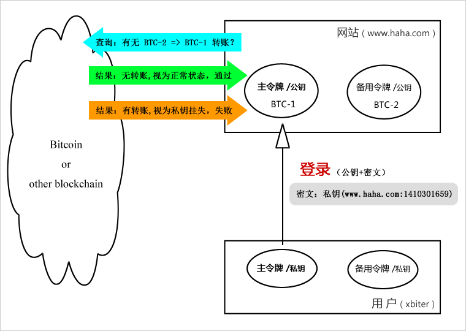
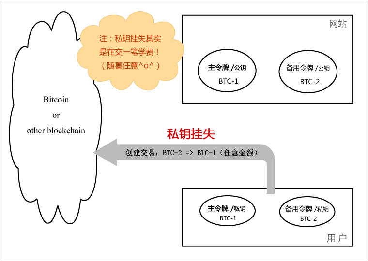
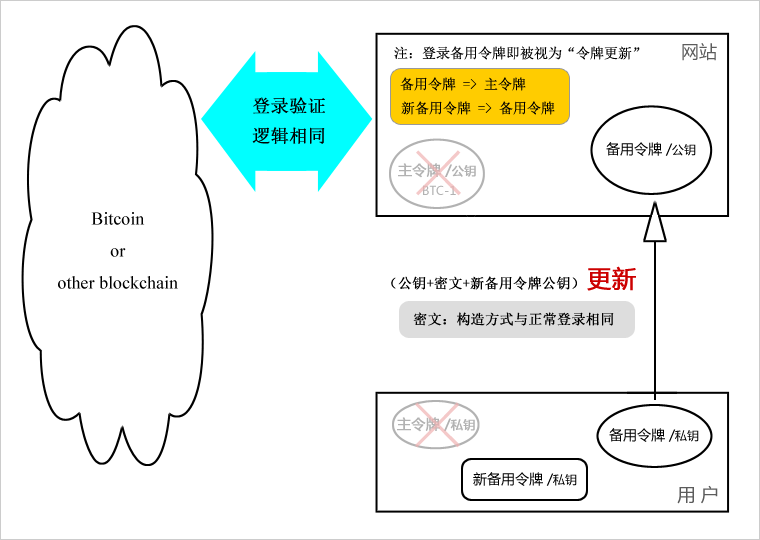

网游经年，与身边的网友曾经共同期待过一个幼稚的梦想：简单的用户注册和全网通用的统一登录——无需在不同的网站上注册不同的名字和设置不同的密码，我们只要在“网上”登录一次，然后就各类网站畅行无阻……享受着网上瞎逛的无拘无束：看文、回帖、留言、下载，踏过一片片网页，留下一汪汪足迹……自由的思绪，无限跌荡~~
后来学了IT，才知道这个梦想其实很幼稚，貌似弱智：不同的网站是不同的实体，不但拥有者不同，网站的后台服务也各不相干。理想很美好，现实很牢骚。
不过这样类似的想法却很有意义，它可以最大限度的降低用户跨站访问的心理干扰，提高用户自由通行的愉悦体验，黏住并留住用户。譬如曾经一度流行的“单点登录”技术就是该类需求的一个近似实现——注册用户只需要登录一次，即可在相互授权的不同网站间自由通行。后来更发展出了可用于无关网站间的“开放认证（OAuth）”协议，允许新网站借助成熟网站的用户验证来进行直接登录。
但不论是单点登录还是开放认证，它们都有局限性。前者要求各网站间相互信任，后者限制了新网站对用户的本地化服务（或某种牵制）。或许，让用户如此简单的畅游网络，从技术上来说，我们该死了这条心了。
互联网的发展日新月异，新观念新网站新产品不断上演……我们真的很渴望能够很随性地去尝试一下这些新的事物，不只是好奇和探索。但是，每当我抵达首页，一个无法回避的注册登录框——让我兴味索然……我已经很讨厌取名了，而且，密码不得随性和简单——更重要的是，你还得记住它们！一个简单的注册逻辑其实包括很多东西：取名、设计与众不同的密码、邮箱验证，如果还在意这个帐号，还得把帐号和密码记录在别的地方（比如纸上），以防时过境迁之后忘了。这确实麻烦、头疼，以至于后来出现了专门的软件和服务公司，如网络版的LastPass.com（免费）、Mac程序版的1Password、开源的KeePass等等。
我们的账户与密码不断累积、发展……时至今日，基本可以这样说，如果不借助于专门的账号/密码管理工具或服务，我们真的会晕死在这帐号与密码的深霾里。另外，账户名和密码其实也携带了我们的个人习惯和隐私，在持续不断的注册，零零散散的隐私泄漏积累之后，必会被大数据技术所破解，我们将不再匿名。同时，我们也被暴露在黑客和不良份子的观览台上……我们的自我保护能力也在逐渐消失。
而对于推出新概念新产品的创新网站来说，用户的注册惰性也让它们遭受损失。他们需要付出更多的努力去吸引新用户“启动他们的注册行为”，而不是简单顺利地就获得了广泛的初期试用反馈。无疑，“注册起步”成了众多新兴公司和产品一个不大不小，但又普遍存在的发展障碍。
简单的用户注册、登录，跨越网站的一号通行——真的意义非凡。
在传统单纯的互联网“服务器/客户端”结构下，不同网站间无法简单的跨站授权登录是一个必然结果。因为所有希望跨站登录的网站间必须达成一致，协商、授权并协调部署，而这缺乏普适性。其实最根本的原因，是这些任意的网站之间缺乏一个公共的可信实体作为中介，供它们取得联系。（注：中心化的身份服务器是不可行的，因为易受攻击）
或许你已经想到了，自2001年BitTorrent技术出现，2003年普遍应用之后，互联网这种传统的“服务器/客户端”结构不再是网络连接方式的唯一。2009年，采用P2P分布式连接的Bitcoin网络出现了，经过近6年跌荡起伏波澜壮阔的成长，以加密技术构建其信用体系的Bitcoin展示了强大的生命力：安全、稳定，而又随处可得。而这，为全球所有的网站提供了一个安全可信，同时也十分便捷的公共载体。
于是，我们的渴望……或可望实现了？
我们的期望并不高，也不复杂。简单注册，便捷登录，忘记密码，一号通行……当然还要安全！
我们知道，Bitcoin的钱包地址其实对应着一对公/私钥。简单的说，公钥作为接收付款的帐号地址对外公开，私钥用于签发对外付款时的密钥。拥有私钥就拥有相应公钥地址上的钱币，所以我们必须妥善地保管好私钥（介于网上黑客行为的普遍性，非专业人士可能应当寄望于硬件钱包的保护）。在这里，我们完全可以用一个Bitcoin公/私钥对来设计网站的注册、登录和认证。
为便于表述，这里把用于登录验证的主公钥/私钥对称为“主令牌”，用于挂失主令牌的备用公钥/私钥对称为“备用令牌”。
图1：普通登录过程

⇧ 说明
- 为避免相同公钥在不同网站上生成相同的账户ID，建议账户的生成方式为：Hash(公钥+域名)。
- 注册：用户端提供3项数据。
- 1）主令牌公钥；
- 2）用主令牌私钥加密“网站域名+当前时间戳”所创建的密文（这使得密文是一次性的）；
- 3）备用令牌的公钥。
- 登录：用户端提供2项数据，同上前2项。
- 网站验证：
- 1）用主令牌公钥解密密文，获取时间戳，同时确认公钥有效；
- 2）查询Bitcoin网络确认是否私钥挂失？
- 3）用主令牌公钥生成账户ID；
- 4）账户ID首先匹配主令牌字段，ID存在则为正常登录；若失败则尝试匹配备用令牌字段，成功则为令牌更新操作；若也失败，则可确认为新用户注册操作。
- 密文中的当前时间戳用于判断登录请求的发起时间，如果超过某个时限（如1分钟），则可认为登录数据的传播异常。同时，网站方应当限制在此时段内只有一次成功登录，第二次的成功认证（如果有）需要判断为盗用，并通知登录来源。
- 作为一个增强的安全措施，如果网站短时间内收到两次以上的合法认证，应当注销第一次的成功登录并给出提醒，要求重新登录。
图2：私钥挂失交易

⇧ 说明
- 私钥挂失其实无需与网站方有任何联系。如果用户怀疑自己的主令牌私钥已经泄漏，可以直接用备用令牌的比特币账户向主令牌地址发送一笔微小的费用，以标记私钥的挂失。
- 向丢失/泄漏的主令牌地址发送费用，这基本上是一个无理的设计——确实有点郁闷。但我们没有其它好的办法来告知了。如果你的私钥是被盗了，相比于可以立即通知所有相关网站冻结账户，这点付出是值得的，并且数量随你定（仅仅受限于Bitcoin网络的最小支付额度）。而如果你确信只是丢失了私钥，你可以不必挂失——用备用令牌正常登录/更新即可。
图3：令牌更新逻辑

⇧ 说明
- 这里，新的主令牌应当使用原来的备用令牌，而不是刚刚提交的新备用令牌。这样设计，原备用令牌就可以简单的更新，从而简化整体的逻辑。
- 简单地，如果用备用令牌登录，就意味着主令牌丢失，这也符合实际情况。因为备用令牌是需要单独存放的——它不应当和使用中的主令牌存储在一起，而当你把备用令牌导入使用中的设备时，很明显是因为主令牌丢失（或泄漏）了。
这是一种全新的用户登录和验证方式。与传统的方式不同，如果实现良好，其登录和验证的过程可以极其简单。除了注册时网站会要求填写一些个人的基本信息外（如邮箱、昵称），在日常的登录中，你甚至不用输入任何东西。如下小场景：
回到家，老公的笔记本没关，Chrome浏览器上正开着数字货币行业里的专业资讯网站“壹比特”。几天没关注Bitcoin了，小香想逛逛论坛，顺便把送的微币领了。
懒得去打开自己那台小本，坐到老公的电脑前。抬手，智能手环还有些电，已经与老公的笔记本连好了。智能手环抬手就亮了，香香按了两下上面的一个按钮，不一会儿，浏览器上那个“快登”插件亮了，页面上弹出一个登录确认对话框。点击确认，香香登进了坛子……账户上又增加了5µB，呵呵，香香开心极了。。
看到了吗？香香女士登录一共只做了3个动作：1、抬手；2、按两下按钮开启了插件连接；3、点击登录确认。
哦天呐！怎会如此简单？——可能吗？
请看如下各个动作的含义详解，各设备都帮你自动完成了哪些行为：
评价：
文章有点长了，如果你看到了这里，一定耽误了您不少时间。非常感谢！本来还想写点扩展的想法，但一时竟然头脑空空荡荡……也该结束了。
毫无疑问，就像不属于任何机构或个人所有的互联网一样，可脱离政府中心化控制的分布式加密货币，为这个世界带来了彻底改变的可能。本文只是一个偶尔的灵感，但如果实现（其实并不难），它带给这个社会的是无以言表的美好。而这，还仅仅只是一个开始……
面对敏感的犯罪执法部门，严厉的监管的确有其重要性，但如果回到二十几年前的互联网初期，因为互联网可以极大的方便犯罪分子们的信息沟通和组织联络，从而严厉的把互联网限制起来……站在今天的立场，谁还会认为正确？
话扯远了，到此打住吧。衷心感谢！
附：加密货币正能量系列《Bitcoin的便捷全球直付对于盗版的正面意义》。
关于作者：
微博：@比特点点
邮箱：zhliner@gmail.com
赏银：
1Q7U45ZNLyYNYe6yWT7gaf6H6JNRB9Jeih@BTC,
PXheD3xDPu2ZXUmjrXSDFZ4Yi3YJM3kmTu@PPC